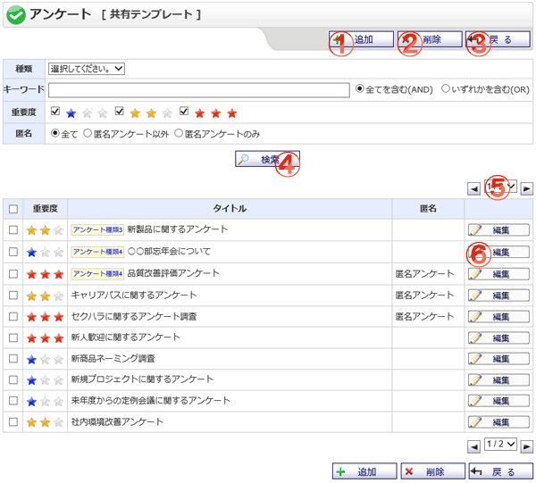

共有テンプレート画面です。

機能説明
追加ボタンアンケートの共有テンプレートを新規追加します。 |
削除ボタン選択した共有テンプレートを削除します。削除確認画面へ遷移します。 |
|---|---|
戻るボタン遷移元の画面へ遷移します。 |
検索ボタン入力した検索条件で該当する共有テンプレートを検索し、一覧に表示します。 |
ページコンボ・前頁・次頁ページコンボで任意のページへ、前頁アイコンクリックで前のページへ、次頁アイコンクリックで次のページへそれぞれ遷移します。 |
編集ボタン指定した共有テンプレートの編集を行います。アンケート編集画面へ遷移します。 |
表示・入力項目説明
種類名
アンケート種類名を選択します。
キーワード
検索するタイトル名を入力します。
検索対象
キーワード検索の範囲を選択します。
重要度
検索する重要度を選択します。
匿名
検索する匿名区分を選択します。